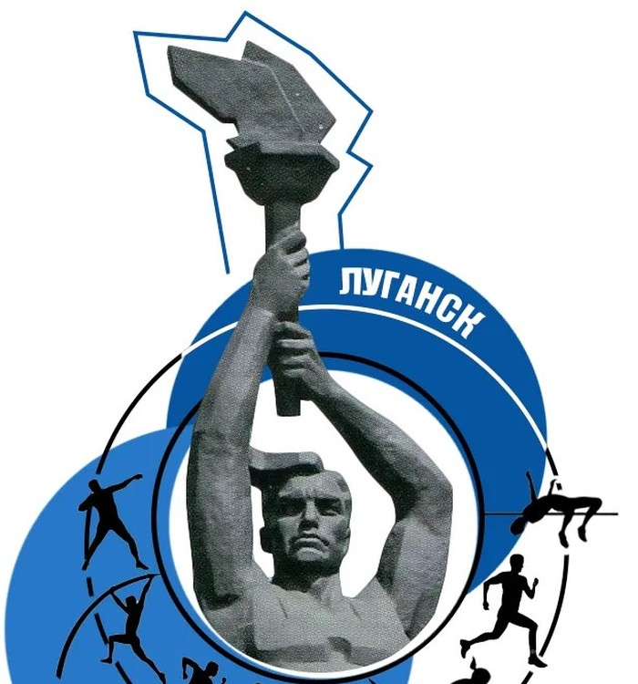

Календарный план
Местные старты из предоставленного плана ЛНР. Отдельные регламенты и расписания добавляются только после проверки.
ЦИФРОВАЯ ПЛОЩАДКА ЛЁГКОЙ АТЛЕТИКИ
Календарь, заявки, выездные соревнования и итоговые протоколы — в одном ритме для представителей, тренеров и организаторов.

Все ключевые действия администратора и представителей собраны в понятных сценариях.
Местные старты из предоставленного плана ЛНР. Отдельные регламенты и расписания добавляются только после проверки.
В демо можно попробовать форму. Настоящая отправка заявок не подключена.
Для выездов и итоговых протоколов нужны подтверждённые документы и сведения об участии.
26 стартов из раздела «Лёгкая атлетика» предоставленного плана. Нажмите на дату: если стартов несколько, откроется список. Даты уточняйте у организаторов.
Измените дату, срок подачи и статус любого старта — календарь и карточки обновятся сразу. Демо-изменения не являются изменением плана ЛНР.
Даты и возрастные группы из календарного плана; отдельные регламенты и итоговые протоколы пока не предоставлены.
Перечень плановых выездов ещё не предоставлен. Для сверки соревнований, положений, расписаний и итогов используйте официальный календарь ВФЛА.
Открыть календарь мероприятий ВФЛА ↗ · Наличие старта в календаре ВФЛА не подтверждает участие спортсменов ЛНР.
Вымышленные имена, квалификации и судейские категории показывают будущий формат справочника.
Подписывайтесь на официальный канал на удобной платформе. Повторяющиеся публикации из Telegram и MAX здесь не дублируются.
Сюда попадут только документы, соответствующие конкретному старту: дата, дисциплина, место и результат сверяются с источником.
Прошедшая дата в плане не подтверждает результат. Когда появятся план выездов и опубликованные протоколы, здесь будут ссылки на регламент, расписание и итоговый PDF, а в карточке — раздел «Наши спортсмены».
Прошедшие мероприятия на сайте ВФЛА ↗Рейтинг появится после проверки результатов, истории выступлений и подтверждённых спортивных разрядов или званий.
Для сравнения нужны протоколы с ФИО, дисциплиной, датой, результатом и местом, прошлые результаты для расчёта прогресса и документы о разряде. Разные дисциплины нельзя напрямую сравнивать по времени или метрам без согласованной методики.
Вымышленный пример: рабочий протокол превращается в итоговый документ после внесения результатов.
| № | Спортсмен | Команда | Результат | Статус |
|---|
Демонстрационная версия показывает сценарии работы. Подача настоящих заявок и хранение персональных данных здесь отключены.
Наверх ↑